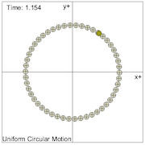

This model simulates a particle exhibiting uniform circular motion. Students are given four animation. The first is a simple illustration of the circular motion. The second shows how the particle has a constant speed with changing direction. The third shows a sample calculation of the acceleration, and how it always points towards the center of the circle. The final animation illustrates how the velocity vector is always tangent to the motion while the acceleration vector is always perpendicular.